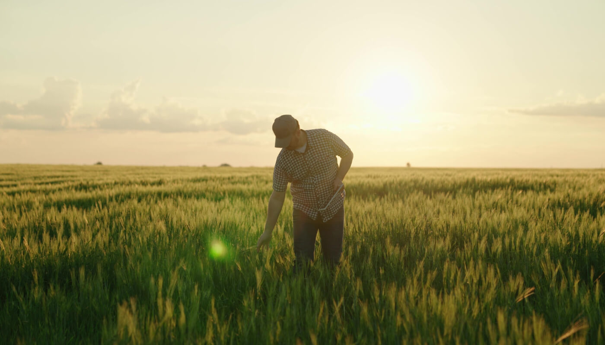

Problema
Produtores rurais sofrem perdas causadas por mudanças climáticas e falta de monitoramento.
A ausência de dados em tempo real dificulta decisões rápidas e eficientes.

Solução

O SpaceFarm utiliza satélites, sensores IoT e análise de dados para monitorar lavouras em tempo real.
Com isso, produtores recebem informações e alertas que ajudam na tomada de decisões e na redução de perdas agrícolas.
Tecnologia
O SpaceFarm combina tecnologias espaciais e sensores inteligentes para monitorar plantações e fornecer informações em tempo real.
Satélites
Dados coletados por satélites do INPE, NASA e ESA.
Sensores IoT
Monitoramento de solo, temperatura e umidade.
Análise Inteligente
Processamento local via Arduino e geração de alertas.
Objetivos
Reduzir perdas
Identificar riscos climáticos e falhas na lavoura antes que gerem prejuízos.
Economizar recursos
Otimizar o consumo de água e energia por meio do monitoramento inteligente.
Sustentabilidade
Incentivar práticas agrícolas mais eficientes e ambientalmente responsáveis.
Público-Alvo

O SpaceFarm atende produtores, cooperativas e empresas agrícolas.
- Produtores rurais
- Cooperativas agrícolas
- Empresas do agronegócio
- Pesquisadores
- Instituições agrícolas
Benefícios
Monitoramento em tempo real
Acompanhamento contínuo das condições da lavoura para decisões mais rápidas.
Alertas automáticos
Notificações sobre mudanças climáticas e riscos que podem afetar a produção.
Produção sustentável
Uso mais eficiente dos recursos naturais, reduzindo desperdícios e impactos ambientais.
Melhor tomada de decisão
Dados precisos auxiliam o produtor no planejamento e na gestão da lavoura.
Teste seus conhecimentos
Responda ao quiz e descubra quanto você sabe sobre agricultura inteligente.
Iniciar QuizAplicação no Dia a Dia
A plataforma auxilia produtores rurais no monitoramento diário da lavoura, fornecendo dados em tempo real e alertas preventivos para aumentar a produtividade.
Temperatura
Detecta aumentos de temperatura que podem prejudicar a produção.
Umidade
Mede a umidade do solo para otimizar a irrigação.
Satélites
Imagens de satélite identificam áreas com desenvolvimento irregular.
Alertas
O produtor recebe avisos diretamente no celular em caso de risco.